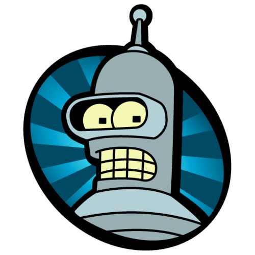

URNA de Bananandia
Algoritmo é coisa Séria!
Esta é uma brincadeira.
Modalidade:Recomeça ao abrir/recarregar.
PRESIDENTE
__
Digite o número do candidato
Auditoria
Escolha uma modalidade e atualize.
| Data | Modalidade | Voto |
|---|
Central de Algoritmos
O robô está trabalhando. A tela reinicia sozinha a cada ciclo.
⚙
inicializando apuração...
票を再計算しています...
contando votos: 13 ▮▮▮▮▮
corrigindo inconsistência...
ERRO 0xBANANA: vestígio encontrado
apagando registros temporários...
✓ algoritmo republicado
_